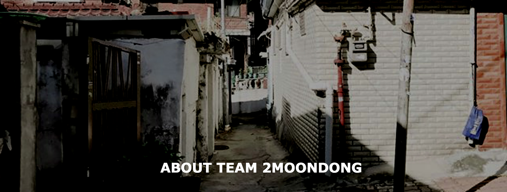
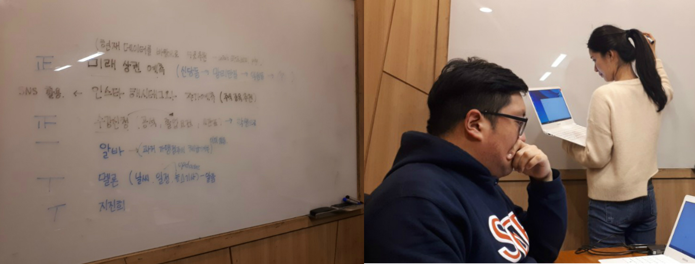
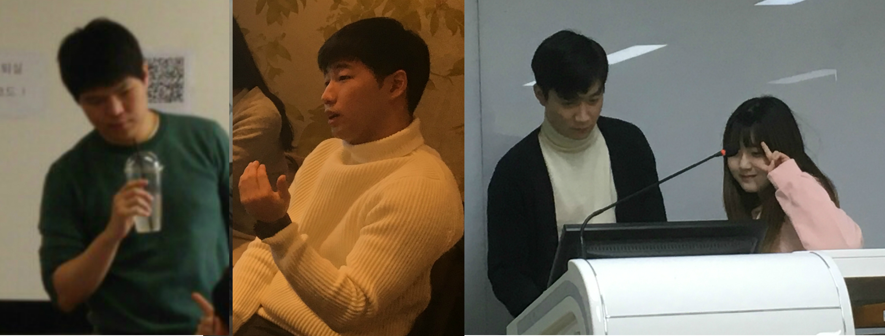

Who We Are
한국외국어대학교 빅데이터 DB분석 전문가과정 2(문동)조

우리 조는 합의에 이르기가 참 힘듭니다. 프로젝트 방향을 논의하는 회의는 물론입니다.
점심 메뉴 정할 때조차 여러 의견이 난립합니다. 그런데 이 생각에는 모두의 마음이 정확히 하나로 모였습니다.
"어차피 해야 할 팀 프로젝트, 제대로 하자."
제대로 하려고 했습니다. 우리는 모든 교육 과정 내내 팀 프로젝트로 무엇을 할지 고민했습니다.
취지에 맞게 빅데이터를 분석하자는 의견, 실용적인 어플리케이션을 만들자는 주장,
심지어는 싱글보드 컴퓨터 라즈베리 파이Raspberry Pi와 24인치 모니터를 이미 ‘질러놓고’ 하드웨어에
구현해보자는 인간도 있었습니다.

제대로 엎어졌습니다. 미리 계획하며 프로젝트를 준비하고 있던 설 연휴 전의 어느 날,
뒤늦게 최종 프로젝트를 다시 빅데이터 분석으로 하라는 방침을 전달받았습니다.
모든 진행을 중단했습니다. 의욕을 잃은 우리는 문자 그대로 모든 걸 내려놓았습니다.
그래도 ‘멋드러진 포트폴리오를 만들어보자’는 본래의 마음가짐은 다들 변하지 않았나 봅니다.
우리는 어렵사리 프로젝트의 방향을 설정했습니다. 뒷전으로 미뤄두었던 R을 뒤늦게나마 파기 시작했습니다.

그러나 시작이 늦었던 만큼‘시간’이라는 물리적 한계는 버거웠습니다. 매일 같이 야간작업은 계속되고 있습니다.
이 글을 쓰고 있는 지금도 깨어있기엔 퍽 깊은 시간입니다만, 아직도 우리가 내일 해야 할 일은 산더미입니다.
익숙하지 않은 툴을 이용해 익숙하지 않은 연구를 진행하는 건 여러모로 낯설고 품도 많이 드는 일입니다.
우리는 현실적인 제약들 속에 최선의 결과를 만들기 위해 노력했습니다.
제대로 하려다 도리어 엎어져 버렸지만, 그 안에서 우리가 할 수 있는 것들을 제대로 보여드리겠습니다.